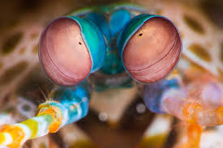
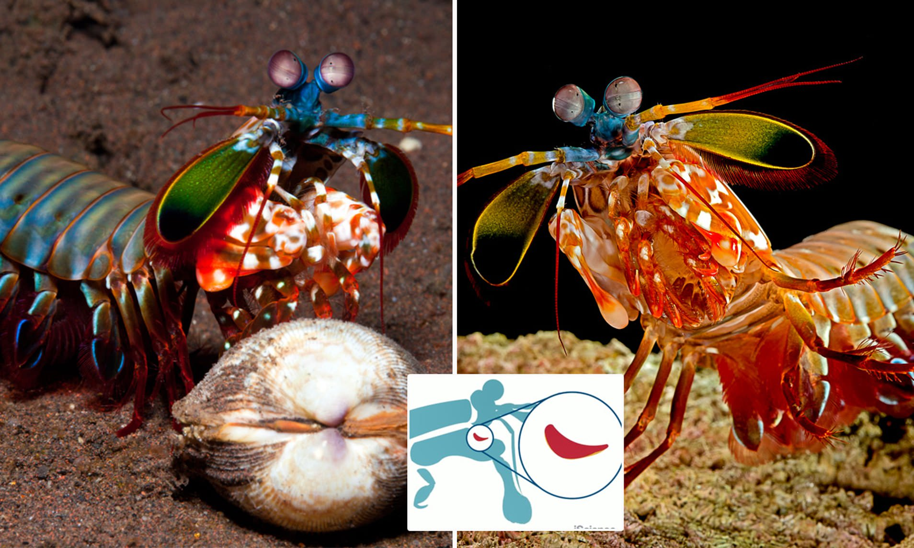
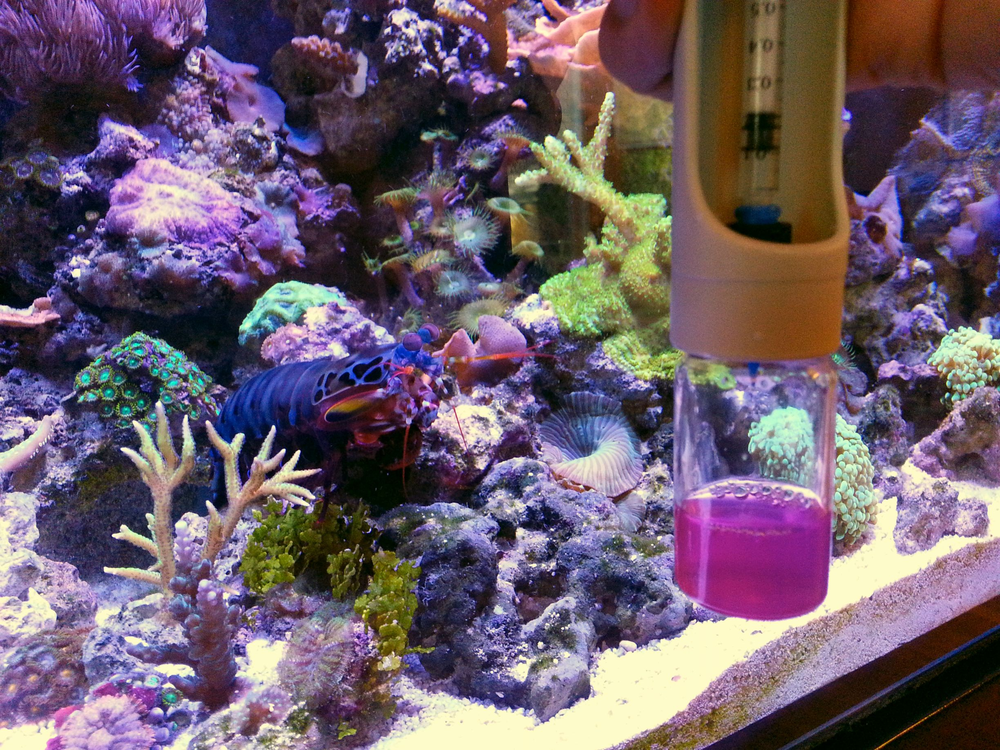

Fatos sobre o Stomatopoda
Informações gerais
Nome científico: Odontodactylus scyllarus
Stomatopoda (ou estomatópode), chamados popularmente de tamarutacas ou de lacraias-do-mar no Brasil, é uma ordem de crustáceos marinhos da subclasse Hoplocarida, que agrupa cerca de 400 espécies, caracterizadas principalmente pela morfologia da segunda pata torácica, que é modificada em apêndice subquelado, lembrando uma pata de louva-a-deus.
| Reino | Filo | Subfilo | Classe | Subclasse | Ordem |
|---|---|---|---|---|---|
| Animalia | Arthropoda | Crustacea | Malacostraca | Hoplocarida | Stomatopoda |
Visão
Os Stomatopodas possuem 16 cones receptores de cor. É o único animal que tem uma visão melhor do que a borboleta.
Pesadelo do fundo do mar
É um dos animais mais violentos do planeta. Possuem dois apêndices raptoriais na parte da frente do corpo, que aceleram na mesmo velocidade que um disparo de um rifle de calibre 22. Seus membros mexem tão rapidamente que a água em volta deles ferve por causa de um processo chamado supercavitação. Quando as bolhas desse processo se chocam, produz uma onda de choque debaixo do mar, que pode matar presas até mesmo se o Stomatopoda errar o alvo.
Aquários
Aquários normalmente não são um bom lugar para o Stomatopodas porque eles tendem a comer qualquer outra criatura que estiverem no aquário e podem até quebrar o vidro.
